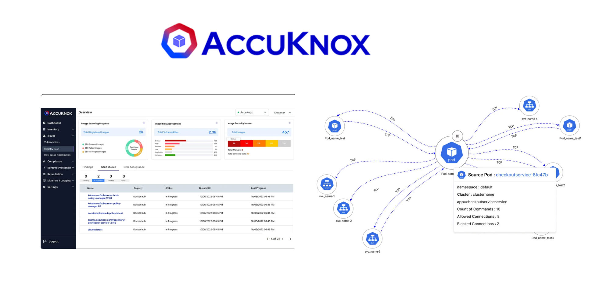

Work Experiece
Software Engineer at AccuKnox 👩💻

During my half-year internship at AccuKnox, I held the role of a software engineer specializing in Go lang development. This opportunity granted me valuable hands-on experience in the realm of cloud and container security.
I was part of the CWPP team where we worked on developing advanced solutions for securing multi-cloud environments and managing container security. This was a substantial task due to the constantly evolving nature of cloud technologies and the critical need to ensure the safety and integrity of digital assets.
My primary focus was on developing microservices that were integral to AccuKnox's agentless multi-cloud security and container security solutions. This entailed writing, optimizing, and maintaining code in Go lang to ensure the efficiency, scalability, and robustness of our microservices. Utilizing Go lang enabled us to harness its speed, efficiency, and robust support for concurrent programming, which is particularly valuable for developing high-performance, real-time security solutions.
My internship experience at AccuKnox not only honed my technical skills but also deepened my appreciation for the significance of cybersecurity in today's digital landscape. It emphasized the importance of continuous learning and staying current with industry trends. I also gained insights into the practical challenges of developing real-world solutions for complex problems.
In summary, my time at AccuKnox as a Go lang developer in the CWPP team was a transformative period. It enabled me to work with cutting-edge technology, collaborate with industry experts, and make a tangible contribution to enhancing cloud and container security. This internship served as a crucial stepping stone in my career, equipping me with the skills and knowledge needed to excel in the dynamic and ever-evolving field of software engineering and cybersecurity.